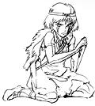

制作日誌 1995年11月
95.11.02（木）
タイミングを取り直したコダック48のテストフィルムをイマジカにて再度上映、今度は保田さんからＯＫが出る。
95.11.05（日）
宮崎監督が美術チームのチーフに山本二三氏を指名。ただし、これは事務的な問題の対処が主な仕事で、各美術のチェックは宮崎監督が行う。
95.11.06（月）
Ｂパート完成分の美術打合せ。
95.11.07（火）
タタリ神の最終テストラッシュが行われ、タタリ神のセル＆特効処理が決定する。
95.11.09 （木）
若手原画マンのあまりの手の遅さに業を煮やした宮崎監督が、彼らを会議室に集め喝を入れる。
ジブリフォーラム第2弾として、元読売新聞香港特派員で産業能率大学教授の戸張東夫氏に現代中国東アジアの現状を語ってもらう。
95.11.13（土）
「もののけ姫」用に発注していたセル転写用カーボンが完成。
95.11.16 （木）
クロマカラーから絵の具が到着する。木箱2つで約 700キロもある為、フォークリフトがないと移動が不可能。バールで破壊し絵の具を取り出す。
ジブリフォーラム第3弾として、宮崎監督原作のラジオドラマ「雑想ノート」の音楽を担当した、カテリーナ古楽合奏団の演奏会がバーで行われる。
95.11.17（金）
クロマカラーから送られてきた絵の具を保田さんがチェック。サンプルと若干色が違うものが多く頭を抱える。サンプルとあまりに色が違っていた2色をリテークとし、残りはこのまま使うことになる。
95.11.18 （土）
1996年度研修生募集締切り。応募者数作画 116人、仕上96人、美術29人。
95.11.21（火）
研修生1次書類選考が行われ、作画10人、仕上12人、美術２人の計24人が選考を通過、来月16、23日に予定されている、2次実技試験に進む。
95.11.25（土）
絵コンテ CUT532 ～602 まで完成。総秒数は、今回の73CUT 610 秒を加えて、50分49秒に達する。
95.11.30（木）
久石譲氏来社。宮崎監督から、「もののけ姫」の内容を詳しく聞く。
| 次のページへ |
| 日誌索引へ戻る |
| 「もののけ姫」トップページへ戻る |